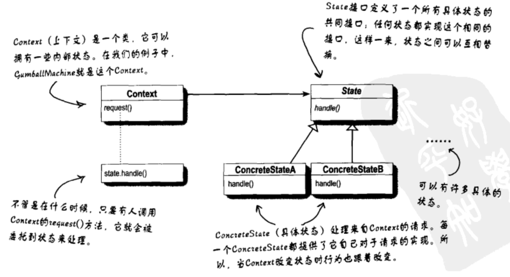
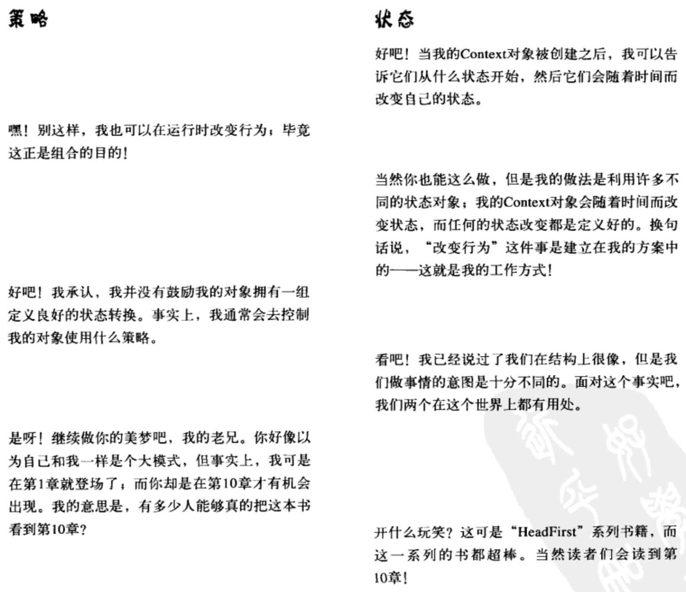
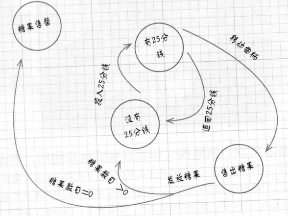
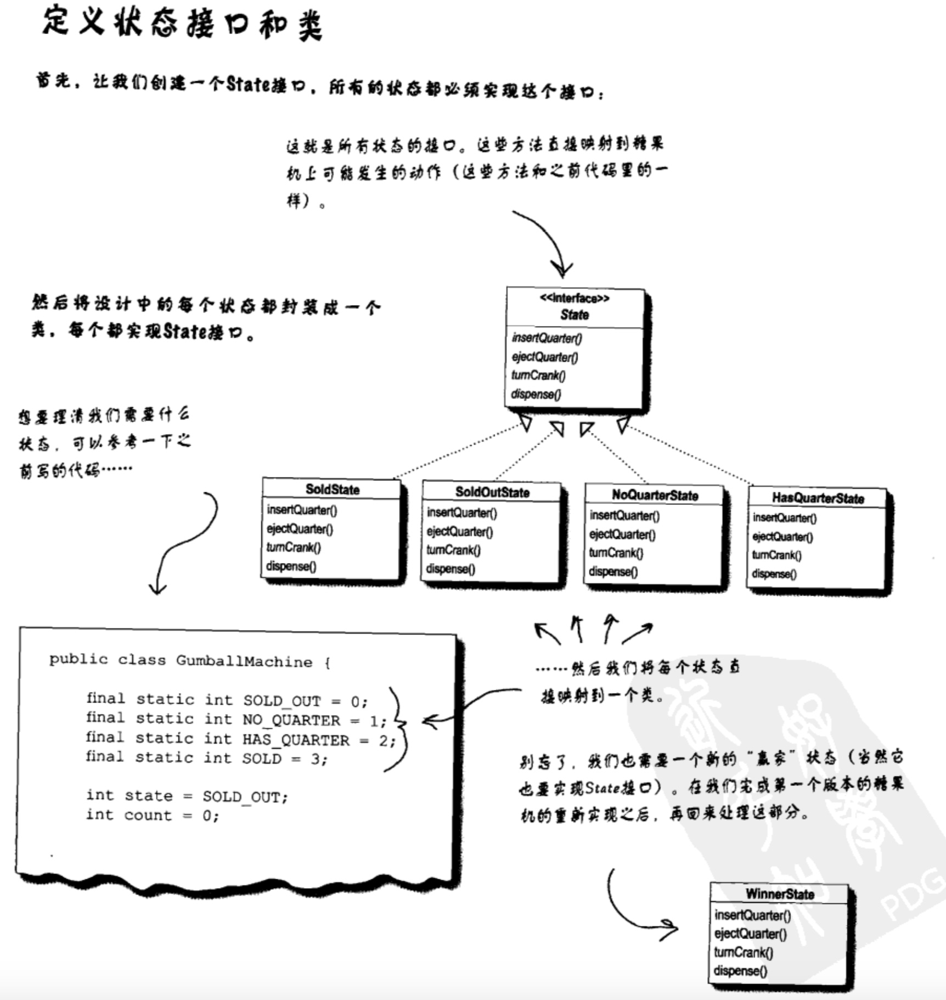

设计模式之状态模式
定义
状态模式(State Pattern) ：允许一个对象在其内部状态改变时改变它的行为，对象看起来似乎修改了它的类。其别名为状态对象(Objects for States)，状态模式是一种对象行为型模式。
这个模式将状态封装成独立的类，并将动作委托到代表当前状态的对象，这就是说行为会随着内部状态而改变。“看起来好像修改了它的类”是什么意思呢？从客户的视角来看：如果说你使用的对象能够完全改变它的行为，那么你会觉得，这个对象实际上是从别的类实例化而来的。然而实际上，你知道我们是在使用组合通过简单引用不同的状态对象来造成类改变的假象。
每个状态的行为都放在各自的类中。
状态模式类图

状态模式与策略模式区别
状态模式类图与策略模式是一模一样的。区别就在于他们的意图。
状态模式中，我们将一群行为封装在状态对象中，context的行为随时可以委托到那些状态对象中的一个。随着时间的流逝，当前状态在状态对象集合中游走改变，以反映出context内部的状态，因此，context的行为也会跟着改变。但是context的客户对于状态对象了解不多，甚至根本是浑然不觉。
而在策略模式中，客户通常主动指定Context所要组合的策略对象时哪一个。策略模式让我们具有弹性，能够在运行时改变策略，但对于某个context对象来说，通常都只有一个最适当的策略对象。
策略模式是围绕可以互换的算法来创建成功业务的，而状态模式通过改变对象内部的状态来帮助对象控制自己的行为。
一般来说，我们把策略模式想成是除了继承之外的一种弹性替代方案。如果你使用继承定义了一个类的行为，你将被这个行为困住，甚至要修改它都很难。有了策略模式，你可以通过组合不同的对象来改变行为。
我们把状态模式想成是不用在context中放置许多条件判断的替代方案。通过将行为包装进状态对象中，你可以通过在context内简单地改变状态对象来改变context的行为。

使用方式
状态模式使用中，比较重要的一点是要先找出当前业务中的所有状态，然后对每个状态编写类，并对每个状态中的每个操作设置方法。
可以通过画图方式将状态轮转图画出来，也就是状态图：

-
首先，我们定义一个State接口，在这个接口内，糖果机的每个动作都有一个对应的方法。
-
然后为机器中的每个状态实现状态类，这些类将负责在对应的状态下进行机器的行为。
-
最后，我们要摆脱旧的条件代码，取而代之的方法是，将动作委托到状态类。现在我们要把一个状态的所有行为放在一个类中，这么一来我们将行为局部化了，并使得事情更容易改变和理解。

和程序状态机（PSM）不同，状态模式用类代表状态。
状态模式注意点
-
当状态转换是固定的时候，适合放在Context中。当状态动态的时候，通常放在状态类中。放在状态类中的缺点是：状态类之间产生了依赖。
-
状态类会产生很多类出来，但是这不重要，真正重要的是你暴露给客户的类数目。
-
一个类，一个责任。
代码示例
state.py:
# coding=utf-8
from abc import ABCMeta, abstractmethod
class State(object):
metaclass = ABCMeta
def __init__(self, gumballMachine):"""糖果机的引用，将他记录在实例变量中"""self.gumballMachine = gumballMachine
@abstractmethod
def insertQuarter(self):"""投入25分钱的动作"""pass
@abstractmethod
def ejectQuarter(self):"""退回25分钱的动作"""pass
@abstractmethod
def turnCrank(self):"""转动曲柄"""pass
@abstractmethod
def dispense(self):"""发放糖果"""pass
no_quarter_state.py:
# coding=utf-8
from State import State
class NoQuarterState(State):
"""state: 没有25分钱"""
def __init__(self, gumballMachine):State.__init__(self, gumballMachine)
def insertQuarter(self):print "You inserted a quarter"# 投入钱后，状态切换到有钱状态self.gumballMachine.setState(self.gumballMachine.getHasQuarterState())
def ejectQuarter(self):
print "You haven't inserted a quarter"
def turnCrank(self):
print "You turned, but there is no quarter"
def dispense(self):print "You need to paly first"
has_quarter_state.py:
# coding=utf-8
from State import State
class HasQuarterState(State):
"""state: 有25分钱"""
def __init__(self, gumballMachine):State.__init__(self, gumballMachine)
# 这是此状态一个不恰当的动作
def insertQuarter(self):print "You can't insert another quarter"
def ejectQuarter(self):print "Quarter returned"# 退出钱后，将状态切换到NoQuarterState状态self.gumballMachine.setState(self.gumballMachine.getNoQuarterState())
def turnCrank(self):print "You turned...."# 转动后，切换状态为售出糖果状态。self.gumballMachine.setState(self.gumballMachine.getSoldState())
# 另一个不恰当的动作
def dispense(self):print "No gumball dispense"
sold_state.py:
# coding=utf-8
from State import State
class SoldState(State):
"""state:售出糖果"""
def __init__(self, gumballMachine):
State.__init__(self, gumballMachine)
# 对于此状态来说，以下三种动作都是不恰当的。
def insertQuarter(self):
print("Please wait, we're already giving you a gumball!")
def ejectQuarter(self):
print("Sorry, you already turned the crank!")
def turnCrank(self):
print("Turning twice doesn't get you another gumball!")
# 根据工作流程图，此动作才是此状态真正的动作。
def dispense(self):
# 现在是SoldState状态，顾客已经付过钱，发放糖果。
self.gumballMachine.releaseBall()
# 检查糖果机的剩余数目，切换到不同的状态
if self.gumballMachine.getCount() > 0:
self.gumballMachine.setState(self.gumballMachine.getNoQuarterState())
else:
print("Oops, out of gumballs")
self.gumballMachine.setState(self.gumballMachine.getSoldOutState())
sold_out_state.py:
# coding=utf-8
from State import State
class SoldOutState(State):
"""state: 糖果告罄"""
def __init__(self, gumballMachine):State.__init__(self, gumballMachine)
def insertQuarter(self):print "the machine is sold out"
def ejectQuarter(self):print "the machine is sold out"
def turnCrank(self):print "the machine is sold out"
def dispense(self):print "the machine is sold out"
gumball_machine.py:
# coding=utf-8
from HasQuarterState import HasQuarterState
from NoQuarterState import NoQuarterState
from SoldState import SoldState
from SoldOutState import SoldOutState
class GumballMachine(object):
"""糖果机"""
def __init__(self, numberGumballs): # 初始糖果数目# 每一种状态都创造一个状态实例self.soldOutState = SoldOutState(self)self.noQuarterState = NoQuarterState(self)self.hasQuarterState = HasQuarterState(self)self.soldState = SoldState(self)self.count = numberGumballsif self.count > 0: # 如果糖果数目 > 0，就把状态设为NoQuarterState self.state = self.noQuarterStateelse: # 初始状态为SoldOutState self.state = self.soldOutState
def insertQuarter(self):self.state.insertQuarter()
def ejectQuarter(self):self.state.ejectQuarter()
def turnCrank(self):self.state.turnCrank()# 他是一个内部动作，用户不允许直接要求机器发糖果，所以不用在此类中去实现它self.state.dispense()
def setState(self, state):self.state = state
def getHasQuarterState(self):"""返回HasQuarterState的状态，供具体状态类调用进行状态转换"""return self.hasQuarterState
def getNoQuarterState(self):return self.noQuarterState
def getSoldState(self):return self.soldState
def getSoldOutState(self):return self.soldOutState
def releaseBall(self):"""这个机器提供了一个releaseBall()的辅助函数来释放糖果，并将count减1"""print "A gumball comes rolling out the slot"if self.count != 0: self.count -= 1
def getCount(self):return self.count
测试代码:
# coding=utf-8
from GumballMachine import GumballMachine
if __name__ == '__main__':
# 初始化糖果机糖果数目为5
gumball_machine = GumballMachine(5)
# 打印出机器的初始状态
print gumball_machine.state
# 投入一枚25分钱硬币，转动曲柄，拿到糖果
gumball_machine.insertQuarter()
gumball_machine.turnCrank()
# 再次打印出机器的状态
print gumball_machine.state
# 投入一枚25分钱，要求机器退钱，转动曲柄
gumball_machine.insertQuarter()
gumball_machine.ejectQuarter()
gumball_machine.turnCrank()
# 再次打印出机器的状态
print gumball_machine.state
gumball_machine.insertQuarter()
gumball_machine.turnCrank()
gumball_machine.insertQuarter()
gumball_machine.turnCrank()
# 取出糖果后，要求机器退钱
gumball_machine.ejectQuarter()
# 再次打印出机器的状态
print gumball_machine.state
# 压力测试
gumball_machine.insertQuarter()
gumball_machine.insertQuarter()
gumball_machine.turnCrank()
gumball_machine.insertQuarter()
gumball_machine.turnCrank()
gumball_machine.ejectQuarter()
# 再次打印出机器的状态
print gumball_machine.state